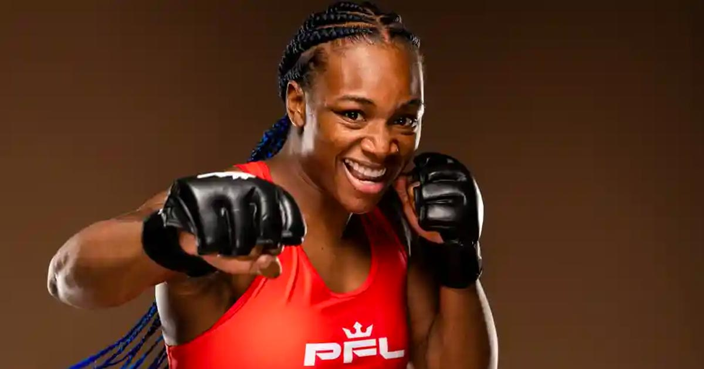
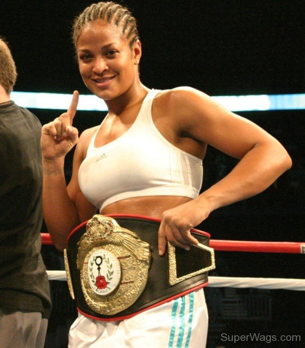
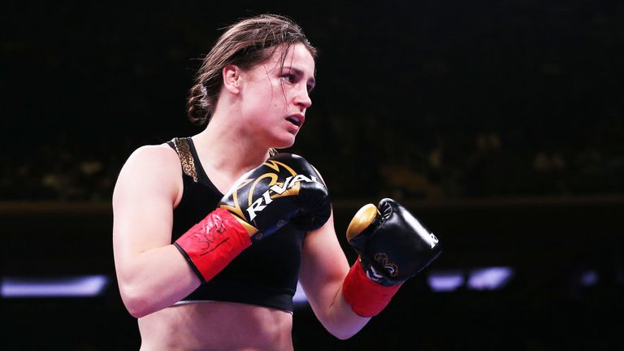

Claressa Shields
Claressa Shields is a two-time Olympic gold medalist and three-division world champion. She is considered one of the best female boxers of all time and has a professional record of 11-0 with 2 knockouts. Shields is known for her powerful punches and aggressive style in the ring.
Laila Ali
Laila Ali is the daughter of legendary boxer Muhammad Ali and had a successful career in her own right. She retired undefeated with a record of 24-0 with 21 knockouts. Ali is also known for her philanthropic work outside of the ring.
Katie Taylor
Katie Taylor is a former Olympic gold medalist and undisputed lightweight world champion. She has a professional record of 14-0 with 7 knockouts. Taylor is known for her